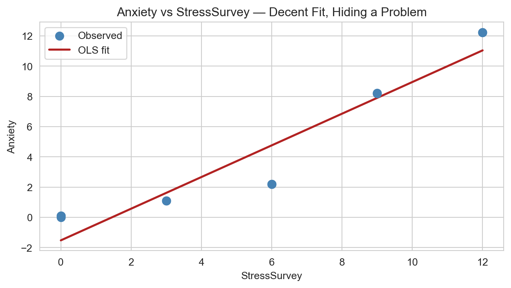
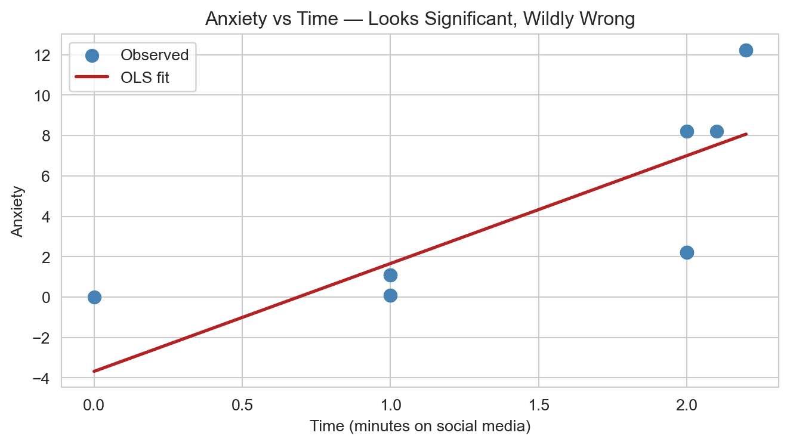
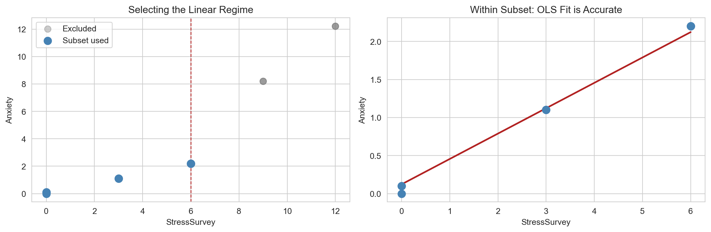

Don’t Trust Linear Models — The Perils of Non-Linearity
The Setup
We’re studying anxiety — measured by fMRI — and its relationship with stress and time spent on social media. We know the true data-generating equation is:
\[\text{Anxiety} = \text{Stress} + 0.1 \times \text{Time}\]
That gives us a precise benchmark: β₀ = 0, β₁ = 1 (Stress), β₂ = 0.1 (Time). Any regression that strays far from these values is telling a wrong story — even if the R² looks great and the p-values are tiny.
The twist: we have two ways to measure stress. A blood test (Stress) that has a perfectly linear relationship with anxiety, and a cheaper self-report survey (StressSurvey) that is monotonically related to actual stress, but not linearly. As we’ll see, that subtle difference is enough to completely derail regression conclusions.
Q1 — Bivariate Regression: Anxiety on StressSurvey
What are the estimated coefficients, and how do they compare to the true relationship?
The regression estimates:
- Intercept: −1.52 (true: 0)
- StressSurvey coefficient: 1.05 (true equivalent: ~0.33)
At first glance, a coefficient near 1 sounds reasonable. But it’s not — because StressSurvey is scaled three times higher than Stress at low values, the “right” coefficient for StressSurvey should be around 0.33 in the linear portion, not 1.05. The model is inflating the effect at low stress levels and compressing it at high ones, then fitting a single straight line through the mess.
The intercept of −1.52 is also a red flag. The true intercept is zero — you can’t have negative anxiety at zero stress and zero social media use. The model is already lying to us in its baseline.
Q2 — Visualization: StressSurvey vs Anxiety
The scatter plot looks decent — R² = 0.90, the line threads through the cloud, and everything appears statistically respectable. But look more carefully: the line overshoots at low StressSurvey values, undershoots in the middle range, and catches up again at the top. That’s not random noise — that’s a systematic curve. The tell-tale sign that the relationship is non-linear and the linear fit is a convenient approximation that happens to look acceptable at a glance.
An analyst who stopped here would walk away confident. That’s the danger.
Q3 — Bivariate Regression: Anxiety on Time
What are the estimated coefficients, and how do they compare to the true relationship?
The regression estimates:
- Intercept: −3.68 (true: 0)
- Time coefficient: 5.34 (true: 0.1)
This is spectacularly wrong. The true effect of Time on Anxiety is small — just 0.1 per minute. The model is reporting 5.34, a factor of 53 times too large.
What’s happening? Time and Stress are correlated in this dataset. Without controlling for stress, the model attributes all of Stress’s anxiety effect to Time. Classic omitted variable bias — statistically significant, sounds alarming, and completely misleading.
Q4 — Visualization: Time vs Anxiety

The fit looks strong (R² = 0.56) and the p-value on Time is 0.001 — you’d publish this without a second thought. But the slope is almost entirely an artifact of confounding with Stress. As Time and Stress both increase across the dataset, the model has no way to separate them. It just draws the best line it can through data that’s really being driven by stress — and calls it a Time effect.
This is the kind of finding that turns into a press release.
Q5 — Multiple Regression: StressSurvey + Time
Controlling for StressSurvey — does the Time coefficient improve?
The regression estimates:
- Intercept: 0.59 (true: 0) — acceptable
- StressSurvey: 1.43 (true equivalent: ~0.33) — badly inflated
- Time: −2.78 (true: 0.1) — wrong sign, wrong magnitude
This is where things get truly alarming. After controlling for StressSurvey, Time’s coefficient flips negative — the model now says more social media reduces anxiety. The true effect is +0.1. We’re getting −2.78.
The model has R² = 0.935 and all coefficients are statistically significant (p < 0.05). None of those green lights matter. The StressSurvey proxy’s non-linearity corrupts the whole system. When you use a bent measuring stick to control for something, you don’t actually control for it — you leave a residual lump of stress that gets incorrectly assigned to Time, with a backwards sign.
Q6 — Multiple Regression: Stress + Time
What happens when we use the blood-test measure of Stress instead?
The regression estimates:
- Intercept: ~0 (true: 0) ✓
- Stress coefficient: 1.000 (true: 1.0) ✓
- Time coefficient: 0.100 (true: 0.1) ✓
R² = 1.000. Every coefficient matches the truth to the last decimal place. When we use an accurately measured, linearly related variable for Stress, the regression works exactly as advertised. This is the baseline we should always be chasing — but in practice, we almost never have a blood test. We have a survey.
Q7 — Model Comparison
Same outcome variable. Same predictors conceptually. Opposite conclusions about Time.
| Model 5: StressSurvey + Time | Model 6: Stress + Time | |
|---|---|---|
| R² | 0.935 | 1.000 |
| Stress proxy coef | 1.43 ✗ | 1.00 ✓ |
| Time coef | −2.78 ✗ | +0.10 ✓ |
| All p-values < 0.05 | Yes | Yes |
| Coefficients close to truth | No | Yes |
Both models achieve statistical significance on every coefficient. Both have high R². If you judged these models on conventional criteria alone — p-values and R² — you’d consider both acceptable. You’d have no idea that one is telling you social media reduces anxiety while the other says it barely increases it.
This is the central lesson: statistical significance is not the same as correctness. A model can be confidently, precisely, significantly wrong. The only way to catch this is to seriously interrogate whether your control variables satisfy the linearity assumption — not just the monotonicity assumption most researchers implicitly rely on.
Q8 — Real-World Implications
What headlines do these models generate? Who believes which?
Model 5 (StressSurvey + Time) headline: “Study Finds Social Media Use Linked to Lower Anxiety”
Model 6 (Stress + Time) headline: “Social Media Has Minimal Effect on Anxiety, Blood-Test Study Shows”
Assuming confirmation bias is real — and it is — a worried parent is going to believe whichever model matches their prior. If they already believe social media is harmful, they’ll distrust Model 5’s “it lowers anxiety” result and cling to Model 6. If they’ve been reading the panic literature for years, a coefficient of 0.1 will feel like a cover-up.
Facebook, Instagram, and TikTok executives will prefer Model 5 without hesitation. A statistically significant, peer-reviewed finding that social media reduces anxiety is a litigation shield, a talking point for Congressional hearings, and a press release all at once. They don’t need to fabricate data — they just need researchers to keep using survey-based stress measures instead of blood tests.
This is not hypothetical. The history of tobacco research, sugar industry funding, and social media mental health studies all follow the same pattern: methodologically defensible choices that happen to produce convenient results.
Q9 — Avoiding Misleading Statistical Significance
Can we salvage the StressSurvey model by being smarter about which data we use?
The problem with Model 5 is that StressSurvey’s relationship with Stress is non-linear across the full dataset. But in the lower range — when Stress is between 0 and 2, StressSurvey goes from 0 to 6 proportionally. In that region, the proxy is approximately linear.
The strategy: restrict the analysis to the “statistical regime” where linearity actually holds — specifically rows where StressSurvey ≤ 6.

Results on the subset:
- Intercept: ~0 (true: 0) ✓
- StressSurvey: 0.333 (correct — in this regime StressSurvey = 3 × Stress, so coefficient = 1/3) ✓
- Time: 0.100 (true: 0.1) ✓
- All p-values: < 0.05 ✓
The coefficients are now both statistically significant and correct. The key move was not blindly running the regression on all the data — it was first plotting the relationship, identifying where linearity plausibly holds, and constraining the analysis to that zone.
Before running any regression, plot your variables. Find the regime where linearity is defensible. If no such regime exists across the full sample, either transform your variables, use a non-linear model, or be explicit about what you’re assuming and where it breaks down. A regression result is only as trustworthy as its weakest assumption — and that assumption is almost always linearity, not the one everyone actually checks.